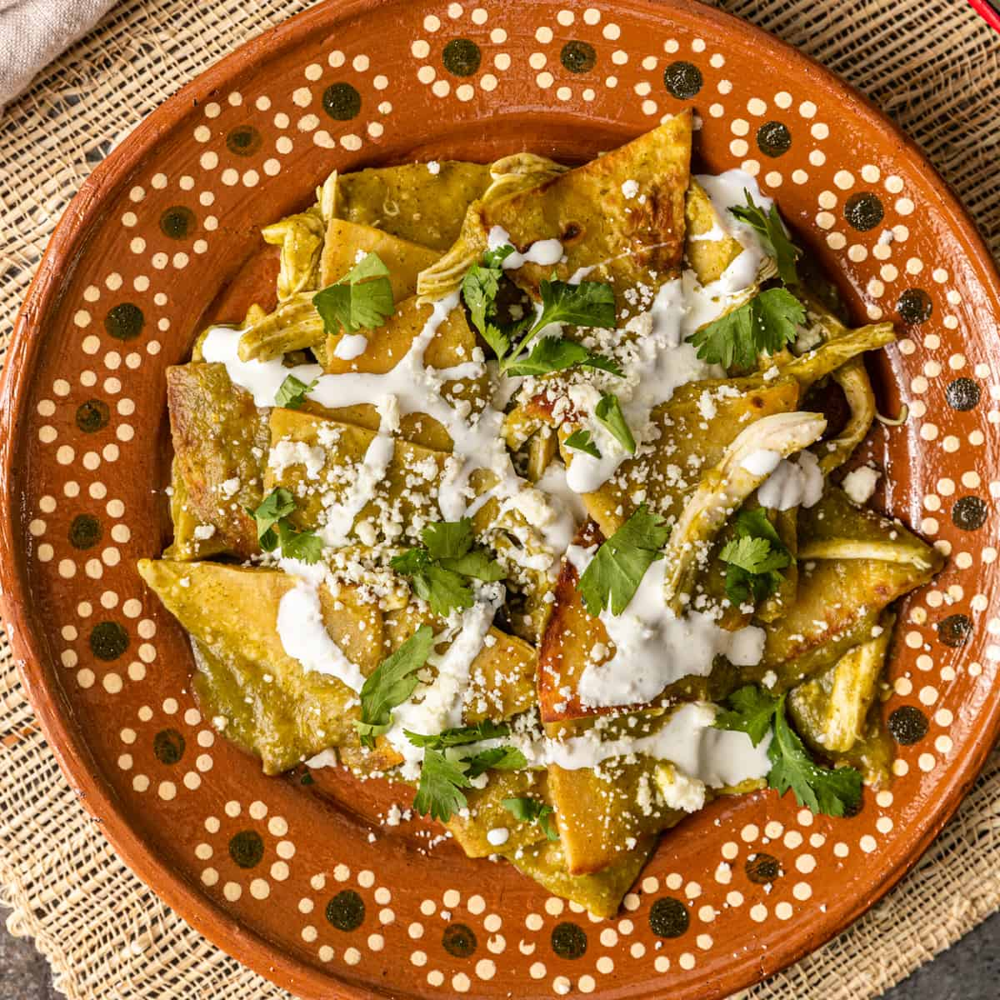

Green Chilaquiles

Delicious, comforting green chilaquiles are easy enough to make with pre-made, store-bought ingredients like tortilla chips and a jar of salsa. But to make your chilaquiles really memorable, follow this recipe to make them from scratch.